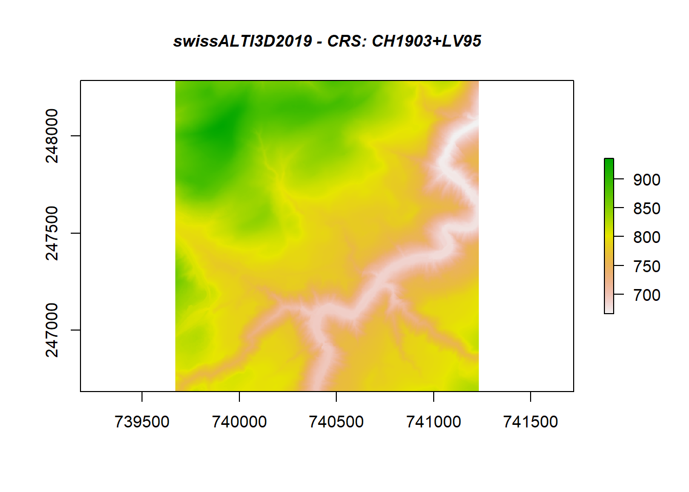
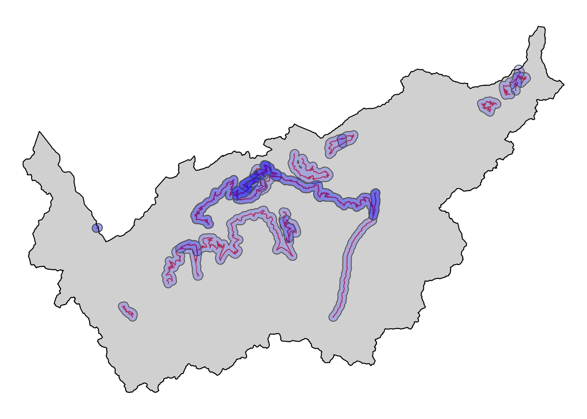
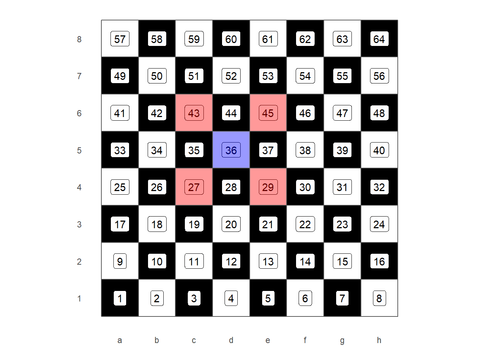
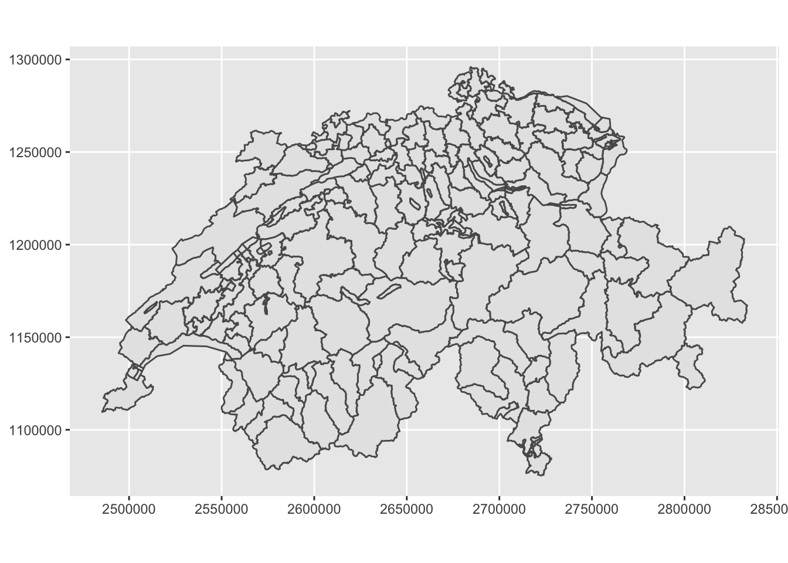

6.1 Reclass Toolset
6.1.1 Slope and Aspect
In mathematics, the slope or gradient of a line describes its steepness, incline, or grade. A higher slope value indicates a steeper incl.
Source: “http://wiki.gis.com/wiki/index.php/Slope”
In GIS and specifically in terrain analysis, calculating the terrain slope is of great importance, since it can play a significant role in various forms of technical analysis. The most common way of calculating the slope is from a Digital Elevation Model (DEM).
In ArcGIS pro the tool used for computing the slope of a raster dataset with elevation
data is called Slope (3D Analyst).It identifies the steepness at each cell of a raster surface.
The lower the slope value, the flatter the terrain; the higher the slope value, the steeper the terrain.
In R, raster package includes the function terrain(), which helps us compute
slope, aspect and other terrain characteristics from a raster with elevation data.
Let’s start by computing the slope of the swissAlti3d raster dataset.
# Importing a raster dataset
# swissALTI3D2019.tif -- Source: https://geovite.ethz.ch
library(raster)
swissAlti3d <- raster("sample_data/Raster/swissALTI3D2019.tif")
plot(swissAlti3d,
main = "swissALTI3D2019 - CRS: CH1903+LV95",
cex.main=1,font.main=4)
After importing and visualizing our raster dataset, we use the terrain function to calculate the slope.
# Computing the slope of a raster dataset using the terrain() function
swissAlti3d_slope <- terrain(swissAlti3d, opt="slope", unit="degrees")
plot(swissAlti3d_slope,
main = "Slope of swissALTI3D2019 in degrees (°)",
cex.main=1,font.main=4)
In the function above, we define the operation we want to perform as the second
argument of the function (opt = “slope”). Furthermore, we also define the units
of the final result.
Similarly, we compute the aspect of a given dataset. Basically as aspect we can
consider the compass direction that a slope leans towards.
Let’s compute now, using again the same function terrain, the aspect of the
same dataset swissALTI3D2019.
# Computing the aspect of the terrain dataset
swissAlti3d_aspect <- terrain(swissAlti3d, opt="aspect", unit="degrees")
plot(swissAlti3d_aspect,
main = "Aspect of swissALTI3D2019 in degrees (°)",
cex.main=1,font.main=4)
So, R gives us the option to retrieve multiple terrain characteristics of a raster
dataset, using only one function. The aforementioned spatial operation in ArcGIS pro
could be performed using the tool Aspect (Spatial Analyst).
6.1.2 Reclassify
In GIS quite often arises the necessity to reclassify a raster dataset. In other
words, to create new classes with different range of values for the existing cell
values of the dataset. This operation in ArcGIS Pro is performed using the
Reclassify (Spatial Analyst) tool.
In R the respective operation is quite straightforward and is based on the use of
the reclassify function of the raster package. For our example we use the
raster dataset we computed previously, which depicts the aspect of the swissALTI3D2019
dataset.
As a first step, we can compute the histogram of our dataset.
summary(swissAlti3d_aspect)## aspect
## Min. 0.0000
## 1st Qu. 104.1014
## Median 163.3606
## 3rd Qu. 258.6777
## Max. 359.9991
## NA's 12652.0000histinfo <- hist(swissAlti3d_aspect)
histinfo$breaks## [1] 0 20 40 60 80 100 120 140 160 180 200 220 240 260 280 300 320 340 360The number of breaks for our raster values are 19. The aim of ours is to create 4 different classes with the following values:
- 0°-90° -> Class 1
- 90°-180° -> Class 2
- 180°-270° -> Class 3
- 270°-360° -> Class 4
To do so, we create below a reclassification matrix with the respective values.
# create a reclassification matrix
reclass_df <- c(0,90,1,90,180,2,180,270,3,270,360,4)
# convert to Matrix
reclass_m <- matrix(reclass_df,
ncol = 3,
byrow = TRUE)
reclass_m## [,1] [,2] [,3]
## [1,] 0 90 1
## [2,] 90 180 2
## [3,] 180 270 3
## [4,] 270 360 4After creating the respective matrix with the new classes, we are ready to call the reclassify function. The function takes as a first argument the dataset set to be reclassified and as second the matrix, on which the reclassification is based on.
swissAlti3d_aspect_reclass <- reclassify(swissAlti3d_aspect,
reclass_m)
plot(swissAlti3d_aspect_reclass, col = c("red", "green", "yellow","blue"),
main = "Aspect of swissALTI3D2019 in 4 classes",
cex.main=1,font.main=4, legend = FALSE)
legend("topright",
legend = c("0°-90°", "90°-180°", "180°-270°","270°-360°"),
fill = c("red", "blue", "green", "yellow"),
border = FALSE,
bty = "n") # turn off legend border